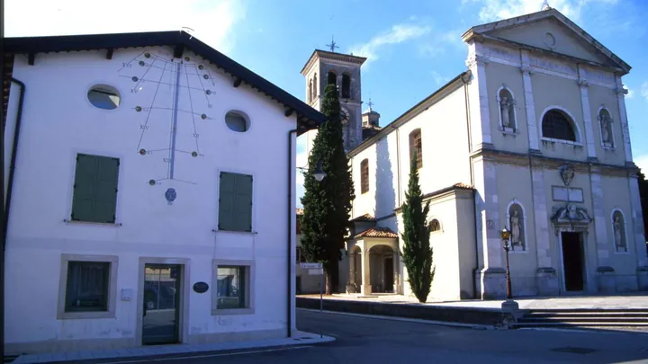

da sab 7 nov a dom 8 nov
Mostre "La mia specialità" e "Bellissimi"
I NONNI DI CASA MAFALDA 15° concorso creativo sul territorio aiellese «La mia Specialità» Esposizione disegni degli alunni delle scuole di Aiello L’idea di fondo è che ognuno ha una “specialità”, un sapere unico da condividere: per i nonni l’esperienza di vita, i vecchi mestieri…
 Indicazioni
Indicazioni
- Costi e prenotazioni
- Costo non indicato · Prenotazione non indicata
- Programma
- Programma da verificare. Apri la fonte ufficiale per orari e possibili aggiornamenti.
- In caso di maltempo
- Nessuna indicazione specifica pubblicata.
- Note
- Acquisito automaticamente dalla fonte.
L’EVENTO
Descrizione completa
I NONNI DI CASA MAFALDA
15° concorso creativo sul territorio aiellese «La mia Specialità» Esposizione disegni degli alunni delle scuole di Aiello L’idea di fondo è che ognuno ha una “specialità”, un sapere unico da condividere: per i nonni l’esperienza di vita, i vecchi mestieri, le ricette segrete, i giochi di una volta o le storie del passato; per i bambini/ragazzi è la freschezza, lo sport e le creatività artistiche. Mostra: “La mia specialità”
Aiello - Fiera di San Carlo 2026 Inaugurazione: sabato 7 novembre, ore 18.30
Domenica 8 novembre 2026 , ore 9.00 - 19.00 Museo della Civiltà Contadina del Friuli Imperiale L’inaugurazione di sabato 7 novembre alle ore 18,30 sarà allietata dal concertino con marce asburgiche dell’Associazione Culturale Musicale San Paolino di Aquileia e dagli Amici della Musica di Aiello.
31ª Mostra Fotografica "Vota la foto più bella" “Bellissimi”
ad Aiello e Joannis La mostra vuole coinvolgere le persone che amano Aiello e Joannis, che hanno inviato immagini naturalistiche, architettoniche, ma anche foto di persone, di animali, di piante e molto altro. Le 44 immagini esposte, scattate da chi ha voluto “cogliere l’attimo”, risaltano quello che noi personalmente riteniamo bello presentare e ricordare di Aiello e Joannis. Tutti possono esprimere il proprio giudizio votando, all’interno della mostra, “La foto più bella”! Mostra: “Bellissimi” ad Aiello e Joannis
Fiera San Carlo 2026 - Aiello Inaugurazione Sabato 7 novembre, ore 18.30 Apertura mostra Domenica 8 novembre 2026, ore 9.00 - 19.00 Museo della Civiltà Contadina del Friuli Imperiale L’inaugurazione di sabato 7 novembre alle ore 18,30 sarà allietata dal concertino con marce asburgiche dell’Associazione Culturale Musicale San Paolino di Aquileia e dagli Amici della Musica di Aiello.
IL PROGRAMMA
Programma e orari
Appuntamenti raccolti dalle fonti elencate. Dove manca un orario, non è ancora disponibile in questa scheda.
Programma pubblicato
- Dal 2026-11-07 al 2026-11-08
INFORMAZIONI UTILI
Prima di partire
- Controllare la fonte prima di partire.
ORGANIZZAZIONE